PVC(폴리염화비닐 — 창틀을 만드는 플라스틱) 창은 잘라 둔 프로파일(단면 모양이 있는 긴 PVC 자재) 네 개의 끝을 녹여 붙여 네모난 틀을 만듭니다. 창호종합기계 4포인트 PVC 용접기 WTM-DY4는 ① 용접 머리 네 개로 틀의 네 모서리를 한 번에 붙이며, 단창·이중창·문틀·문짝을 만들 수 있습니다. 용접 머리마다 ② 알루미늄 주물 열판(전기로 데우는 판)이 프로파일 끝을 녹이고, ③ 열판 면에는 PTFE(테프론이라고도 부르는 열에 강한 플라스틱) 열판지를 붙여 사용합니다. ④ 클램프(물림쇠)가 프로파일을 잡아 열판에 대었다가, 열판이 빠지면 두 끝을 맞대어 누릅니다. ⑤ 같은 계열의 ORION-IV는 프로파일마다 용접 조건을 저장해 두고 불러 쓰며, ⑥ SIRIUS는 용접이 끝난 틀을 자동 사상기(용접 자국을 깎아 정리하는 기계)로 넘깁니다.
이 부분들은 한꺼번에 나온 것이 아닙니다. 먼저 데운 판에 대어 녹이는 방법이 나왔고, 이어 붙인 자리에 밀려 나온 덧살(녹은 재료가 밖으로 밀려 나와 굳은 둔덕)을 긁어 내는 방법, 여러 모서리를 한 번에 붙이는 기계가 차례로 더해졌습니다. 그 사이 다른 산업에서는 뜨거운 바람이나 녹인 재료로 플라스틱을 잇는 방법도 자랐습니다. 이 글은 밖에서 열을 대어 녹이는 방법(열판·열풍·압출)을 다루고, 플라스틱 안에서 열을 만드는 방법(고주파·초음파·마찰·레이저)은 다음 편에서 다룹니다.
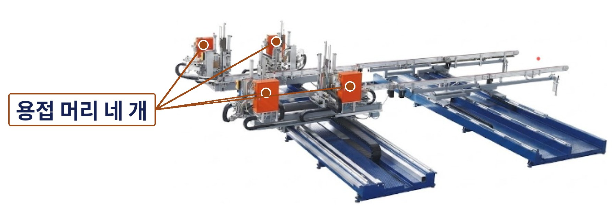
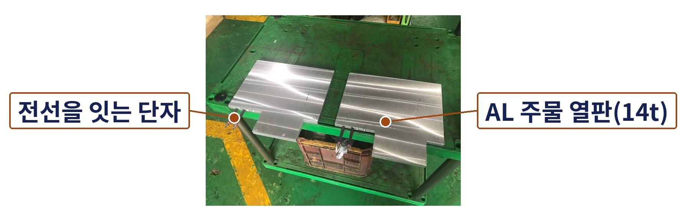
| 지금 기계의 부분 | 옛 기록에서 볼 수 있는 곳 | 이 글의 칸 |
|---|---|---|
| ① 용접 머리 네 개 — 여러 모서리를 한 번에 | 여러 모서리를 한 번에 붙이는 장치의 예: 두 틀의 모서리 여덟 곳을 한꺼번에 붙이는 장치(1990년 미국 특허) | 창틀 모서리 잇기 |
| ② 열판 — 데운 판에 대어 녹이기 | 1930년대 초 PVC를 데운 판으로 잇기 시작함 | 데운 판에 대어 녹이기 |
| ③ 열판지(PTFE) | 이 글에서는 유래를 다루지 않음 | — |
| ④ 클램프(물림쇠) — 잡아서 대고, 맞대어 누르기 | 관을 물림쇠로 잡아 열판에 대고 누르는 융착기(1973년 미국 특허) · 창틀 모서리 용접기의 물림쇠(1973년 독일 출원) | 땅에 묻는 관 잇기 · 창틀 모서리 잇기 |
| ⑤ 용접 조건 — 온도와 가열·냉각 시간 | 관을 녹여 붙이는 미국 표준의 온도와 순서 | 녹여 붙인다는 것 · 땅에 묻는 관 잇기 |
| ⑥ 사상 — 밀려 나온 덧살 정리 | 덧살 정리의 예: 용접 직후 따뜻할 때 덧살을 긁어 내는 방법(1973년 독일 출원) | 창틀 모서리 잇기 · 창호 현장의 용접 |
플라스틱 용접은 열과 누르는 힘으로 플라스틱 두 조각을 잇는 일입니다. 독일 공업 규격(DIN)도 플라스틱 용접을 열가소성 플라스틱을 열과 압력으로 잇는 일로 정의합니다. 열가소성 플라스틱은 데우면 물러지고 식으면 다시 굳는 플라스틱입니다. 창틀의 PVC, 수도관의 PE(폴리에틸렌), 약품 탱크의 PP(폴리프로필렌)가 여기에 들어갑니다. 반대로 한 번 굳으면 데워도 물러지지 않고 타기만 하는 열경화성 플라스틱은 녹여 붙일 수 없습니다.
어떤 방법으로 녹이든 순서는 같습니다. 붙일 면을 깨끗이 맞추고, 열과 힘을 주고, 누른 채로 식힙니다. 녹는 온도가 모자라면 덜 붙고, 너무 오래 데우면 재료가 상하고, 식기 전에 힘을 빼면 붙은 자리가 벌어집니다. 그래서 용접기마다 온도와 시간, 누르는 힘을 맞추는 장치가 있습니다.
지금 기계에서는 — ⑤ ORION-IV는 프로파일마다 용접 조건을 저장해 두었다가 불러 사용합니다. 프로파일 단면이 바뀌면 녹는 데 걸리는 시간도 바뀌기 때문입니다.
그전에는 플라스틱을 나무처럼 깎아 맞추거나, 나사와 접착제로 이었습니다. 바뀐 것은 데운 판(열판)에 붙일 두 끝을 대어 녹인 다음, 판을 빼고 두 끝을 맞대어 누르는 방법입니다. 이 방법은 1930년대 초에 PVC를 잇는 데 처음 쓰였다고 합니다. 접착제가 잘 듣지 않는 PE·PP 같은 플라스틱이 널리 쓰이면서 더 많이 쓰였고, 1960년대에는 가장 널리 쓰이는 플라스틱 용접 방법 가운데 하나가 되었습니다. 관과 가전제품, 사출 부품(녹인 플라스틱을 틀에 부어 찍은 부품)을 잇는 데 두루 쓰였습니다.
아래 그림은 1980년 미국 특허에 「지금까지 쓰던 방식」으로 실린 창틀 용접 순서입니다. 받침대 위에 프로파일을 올려 물림쇠로 잡고, 두 끝 사이에 열판을 넣어 녹인 뒤, 열판을 빼고 두 끝을 맞대어 누릅니다. 맞댄 자리 밖으로 녹은 재료가 밀려 나와 덧살이 생깁니다.
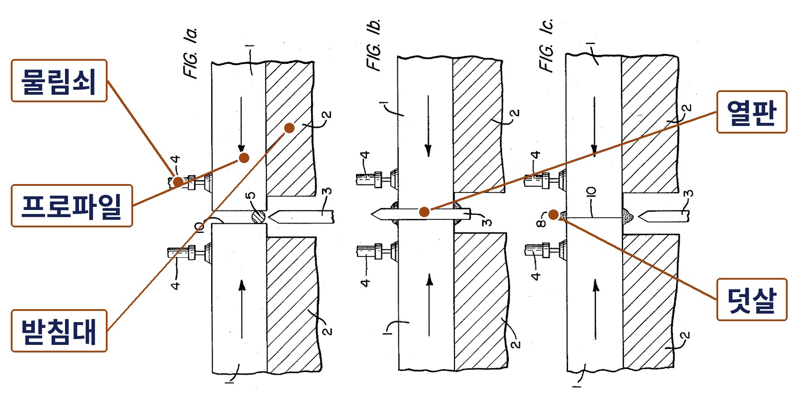
실물로 보면 이렇습니다. 아래 두 사진은 저희 공장에서 휴대용 PVC 용접기 PSW-01을 시운전하며 찍었습니다. PSW-01은 용접 헤드 하나로 모서리 한 곳씩 붙이는 기계라, 열판과 헤드가 한눈에 보입니다.
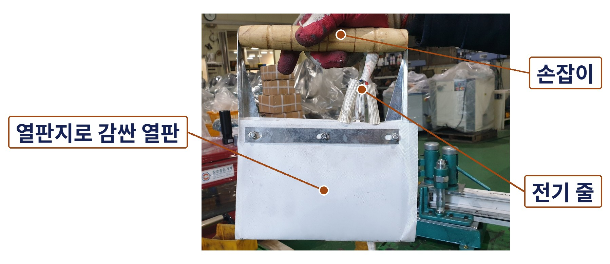
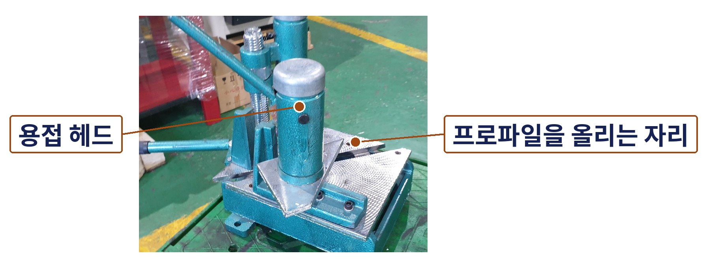
지금 기계에서는 — ② 알루미늄 주물 열판이 프로파일 끝을 녹이고, ④ 물림쇠가 프로파일을 잡아 열판에 대었다가 맞대어 누릅니다. 1930년대의 순서가 그대로 기계 안에 들어 있습니다.
열판을 넣기 어려운 탱크나 배관 부품은 다른 방법으로 이었습니다. 뜨거운 바람(열풍)으로 붙일 자리와 같은 재료로 만든 플라스틱 용접봉을 함께 녹여, 용접봉을 이음 자리에 채워 넣는 열풍 용접입니다.
처음에는 한 손으로 열풍을 이음 자리에 불고, 다른 손으로 용접봉을 같은 바람 속에 밀어 넣었습니다. 1955년 미국 특허는 이 일이 「손재주와 경험이 많이 필요하다」고 적고, 손에 익지 않은 사람도 고르게 붙일 수 있도록 용접봉이 지나가는 통로 둘레로 열풍을 고르게 보내는 노즐을 내놓았습니다. 노즐 높이는 손잡이 바퀴로 맞추고, 용접봉 각도도 바꿀 수 있습니다. 특허 본문은 PVC 용접봉은 거의 세워서, PE 용접봉은 약 45°로 기울여 대라고 적었습니다.
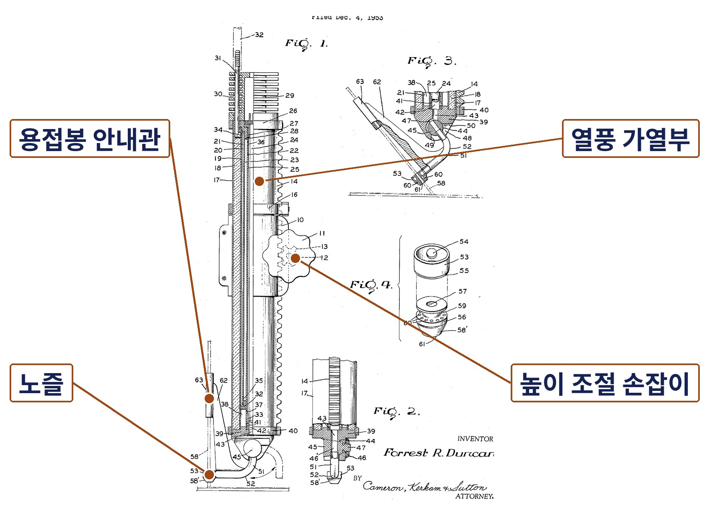
다른 산업의 이야기 — 열풍 용접은 지금도 약품 탱크, 물탱크, 배관 부품처럼 작은 것을 만드는 데 많이 사용합니다. 창호종합기계의 PVC 창틀 용접기는 열풍이 아니라 열판으로 녹입니다.
그전에는 두꺼운 판을 열풍 용접으로 이으려면 용접봉을 여러 번 겹쳐 채워야 했습니다. 바뀐 것은 용접기 안에서 같은 재료를 미리 녹여 구멍으로 밀어 내는 방법(압출 용접)입니다. 1960년대에 열풍 용접에서 발전했습니다. 용접 머리에는 이음 자리를 데우는 열풍 노즐과 녹인 재료를 밀어 내는 압출부가 함께 있어, 두꺼운 이음 자리를 한 번에 채웁니다. 열판 용접이 들어가기 어려운 큰 구조물에 맞고, 폐액·약품 탱크와 상수도 탱크를 만드는 데 많이 사용합니다.
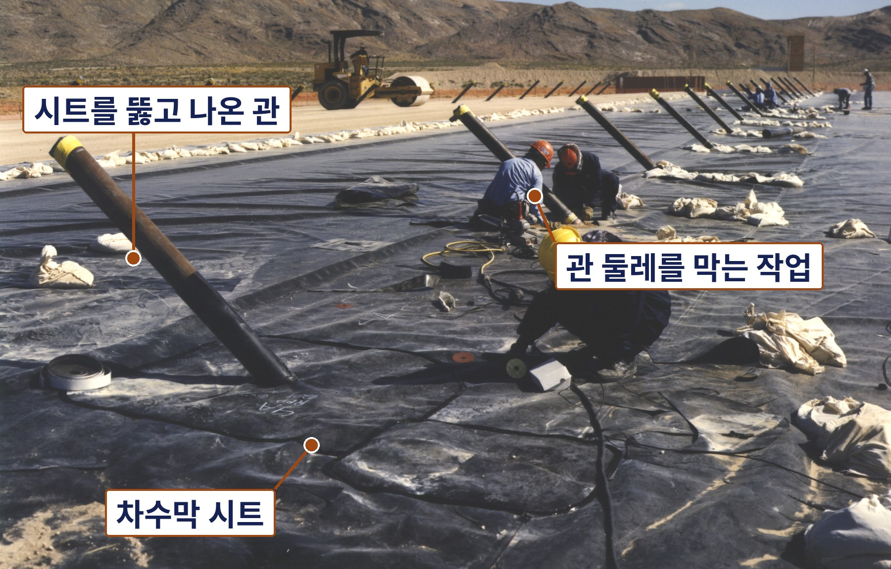
다른 산업의 이야기 — 압출 용접은 탱크와 두꺼운 판 구조물을 만드는 플라스틱 가공 공장에서 사용합니다. 창틀 용접에는 쓰지 않습니다.
PE(폴리에틸렌) 관은 끝을 열판으로 녹여 맞대어 붙이는 방법(맞대기 융착 — 융착은 녹여 붙인다는 뜻)으로 잇습니다. 1955년에 미국의 한 관 제조사가 이 방법을 개발해 곧 유전의 관에 썼습니다.
1973년 미국 특허는 바퀴 달린 관 융착기를 적었습니다. 먼저 놓인 관을 고정 물림쇠로, 이어 붙일 관을 움직이는 물림쇠로 잡습니다. 면 깎는 칼로 두 관 끝을 평평하고 나란하게 깎은 다음, 칼을 빼고 양면 열판을 넣어 관 끝이 무를 때까지 댑니다. 열판을 빼고 유압(기름의 압력)으로 두 끝을 눌러 붙인 뒤 물림쇠를 풀고, 기계를 다음 이음 자리로 옮깁니다.
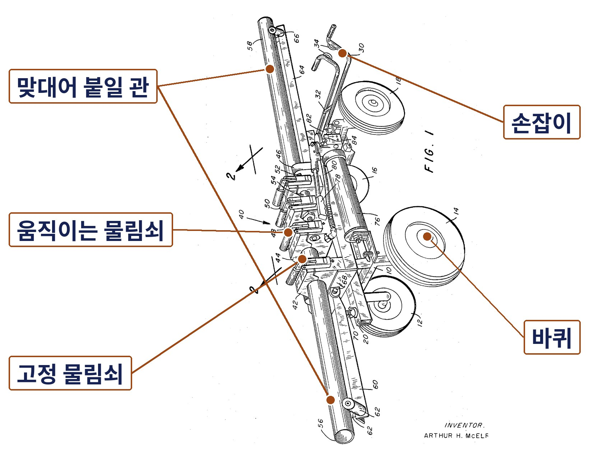
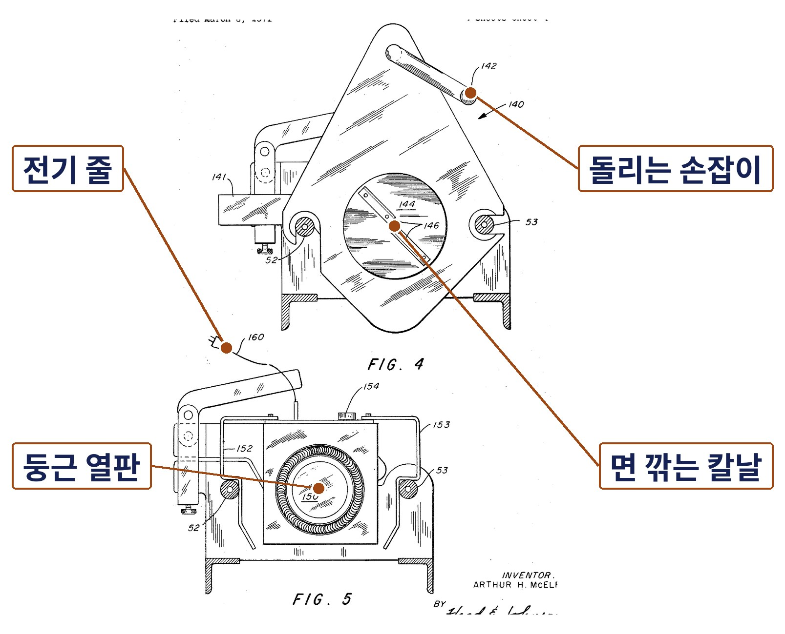
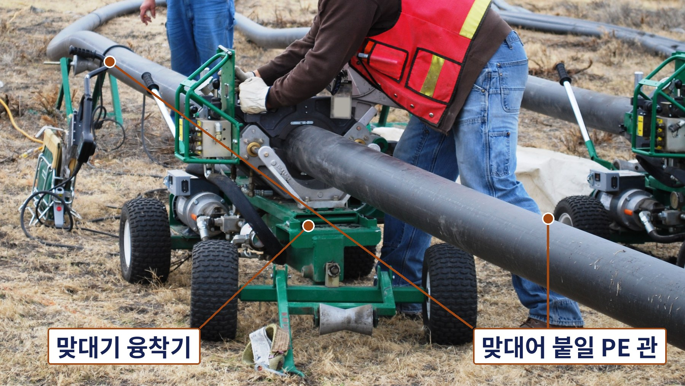
지금 미국 재료시험협회(ASTM)가 정한 PE 관 융착 표준도 같은 순서를 따릅니다. 이 표준은 열판을 약 204~232℃(400~450°F)로 데우고, 관 끝에 정해진 크기의 덧살이 생길 때까지 댄 뒤, 열판을 빼고 눌러 붙여 누른 채로 식히게 합니다.
지금 기계에서는 — ④ 물림쇠로 잡아 열판에 대고 맞대어 누르는 순서, ⑤ 정해 둔 온도와 시간으로 녹이는 방식은 관 융착기와 창틀 용접기가 같습니다. 다른 점은 관은 곧게 맞대고, 창틀은 비스듬히(보통 45°로) 자른 끝을 맞대어 모서리를 만든다는 것입니다.
지붕에 까는 넓은 플라스틱 방수 시트는 이음 자리가 수십 미터씩 이어집니다. 그래서 열풍기를 바퀴 달린 몸체에 얹어 이음 자리를 따라가며 잇는 용접기가 쓰였습니다. 1984년 미국 특허는 이런 용접기를 고친 것입니다. 모터가 바퀴를 굴려 몸체가 나아가고, 납작한 노즐이 겹친 두 시트 사이에 뜨거운 바람을 넣으면 누름 바퀴가 이음 자리 위를 지나며 누릅니다. 그전 기계는 노즐 방향이 정해져 있어 시트가 겹친 방향에 따라 쓰기 어려운 이음 자리가 있었습니다. 이 특허는 시트가 왼쪽으로 겹치든 오른쪽으로 겹치든 쓸 수 있게 하고, 지붕 기울기에 맞춰 바퀴 각도를 조절하게 했습니다.
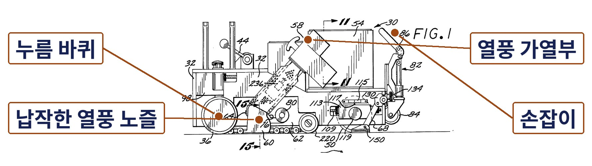
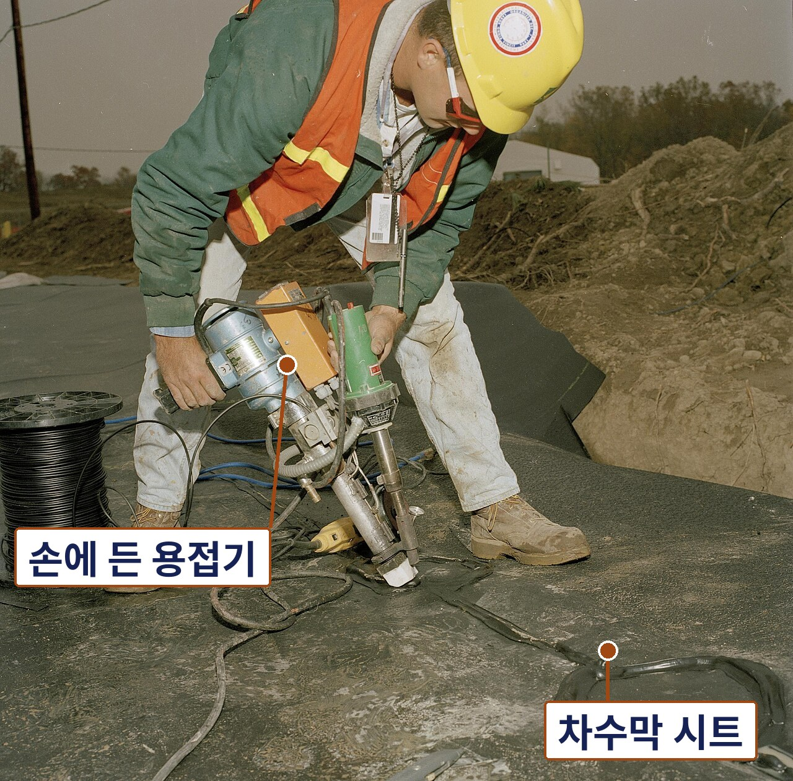
다른 산업의 이야기 — 지붕 방수 시트와 터널·저수지 바닥에 까는 차수막 시트를 잇는 일입니다. 이런 시트는 열풍 외에 뜨거운 쐐기(웨지)를 두 시트 사이로 지나가게 해서 잇기도 합니다. 차수막은 물이 새지 않게 바닥에 까는 시트입니다.
그전에는 창틀 모서리를 열판으로 붙인 다음, 밖으로 밀려 나온 덧살이 식어 굳기를 기다렸다가 깎아 냈습니다. 바뀐 것은 덧살이 퍼지는 자리를 처음부터 좁혀 두고, 따뜻할 때 바로 긁어 내는 방법입니다. 1973년 독일에서 출원되어 1980년 미국에서 등록된 특허는 프로파일을 잡는 레일 끝에 칼날을 달았습니다. 이 칼날이 녹는 자리와 덧살이 퍼지는 폭을 좁혀, 붙인 직후 따뜻할 때 칼로 덧살을 긁어 낼 수 있게 했습니다. 특허 본문은 창틀과 문틀 프로파일을 가장 알맞은 쓰임으로 들었습니다.
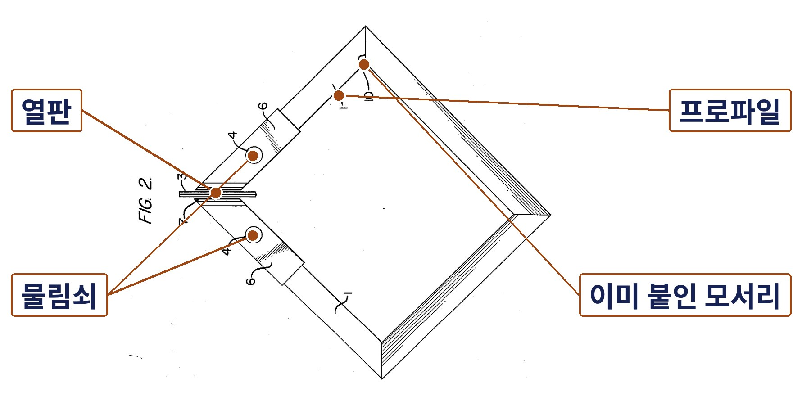
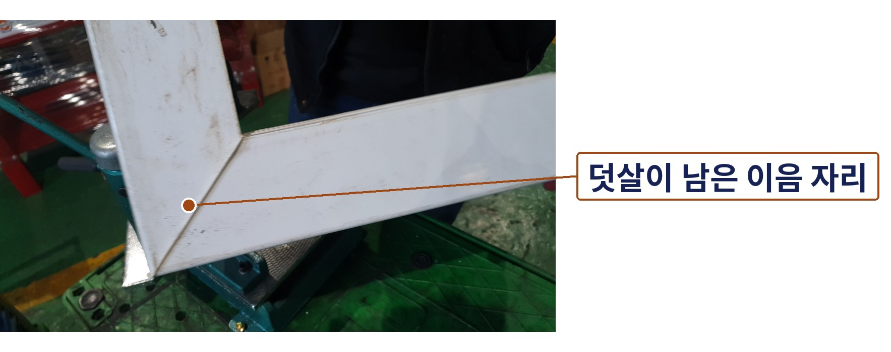
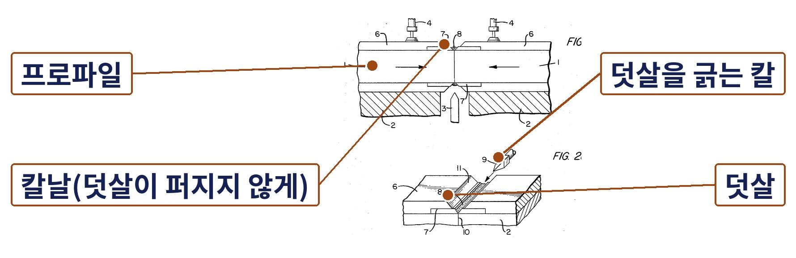
여러 모서리를 한 번에 붙이는 기계도 나왔습니다. 1990년 미국 특허 4,909,892호는 그때까지의 기계가 한 틀의 모서리를 한두 곳씩 붙였다고 적었습니다. 이 특허는 열판 네 개로 두 틀의 모서리 여덟 곳을 한꺼번에 붙이는 장치를 내놓았습니다.
지금 기계에서는 — ① WTM-DY4는 용접 머리 네 개로 한 틀의 네 모서리를 한 번에 붙입니다. ⑥ SIRIUS는 용접이 끝난 틀을 자동 사상기로 넘깁니다. 사상기는 용접기와 따로 있는 기계로, 굳은 덧살을 깎아 정리합니다.
이 글에서 다룬 세 가지와 다음 편에서 다룰 네 가지를 한 표에 모았습니다. 쓰이는 곳은 대표적인 예입니다.
| 방법 | 열을 내는 곳 | 주로 잇는 것 | 쓰이는 곳 |
|---|---|---|---|
| 열판 맞대기 | 데운 판에 대어 녹임 | PVC 창틀 프로파일, PE·PP 관 | 창틀 모서리, 상하수도·가스관 |
| 열풍 용접 | 뜨거운 바람 + 같은 재료의 용접봉 | PVC·PE·PP 판과 시트 | 약품 탱크, 배관 부품, 지붕 방수 시트 |
| 압출 용접 | 미리 녹인 재료를 밀어 넣음 | 두꺼운 PE·PP 판 | 큰 탱크, 두꺼운 판 구조물 |
| 고주파 용접 (다음 편) | 전기장으로 재료 안에서 | PVC처럼 전기장에 데워지는 얇은 시트(PE는 안 됨) | 비닐 제품, 의료용 백 |
| 초음파 용접 (다음 편) | 진동으로 맞닿은 면에서 | 딱딱한 사출 부품 | 장난감, 자동차·전자 부품 |
| 마찰 용접 (다음 편) | 돌리거나 문질러 맞닿은 면에서 | 둥근 부품, 관 끝 | 통 뚜껑, 자동차 흡기 부품 |
| 레이저 용접 (다음 편) | 빛을 흡수한 아래 판에서 | 빛이 통과하는 위 판 + 흡수하는 아래 판 | 자동차·전자 부품 |
창호 공장의 PVC 용접은 이 글의 첫 방법, 데운 판에 대어 녹이는 열판 용접입니다. 창호종합기계는 한 번에 붙이는 모서리 수에 따라 4포인트 용접기 3종(SIRIUS · ORION-IV · WTM-DY4), 2포인트 용접기 5종, 한 곳씩 붙이거나 분할창 중간대를 T자·십자로 잇는 1포인트·T 용접기 3종, 에어 없이 옮겨 가며 쓰는 20kg 휴대용 용접기 1종까지 PVC 용접기 12종을 공급합니다.
용접기에 들어가는 소모 부품도 함께 공급합니다. AL 주물 열판은 표준·전용 11규격을 공급하고, 열판 면에 붙이는 PTFE 열판지는 점착식과 비접착식을 1M·10M 단위로 잘라 보내 드립니다. 용접을 마친 창틀 모서리의 덧살은 손에 들고 쓰는 코너 사상기(220V 전동 · 에어 구동)로 다듬습니다.
하루 생산량과 가장 큰 창의 크기로 기종이 좁혀집니다. 프로파일 단면과 창 크기를 보내 주시면 알맞은 용접기를 제안해 드리고, 김해 전시장에서 그 프로파일로 직접 용접해 보여 드립니다.
프로파일 단면과 창 크기, 하루 생산량을 알려 주시면 맞는 용접기를 제안해 드립니다. 열판은 지금 사용하시는 열판 치수만 알려 주셔도 됩니다.